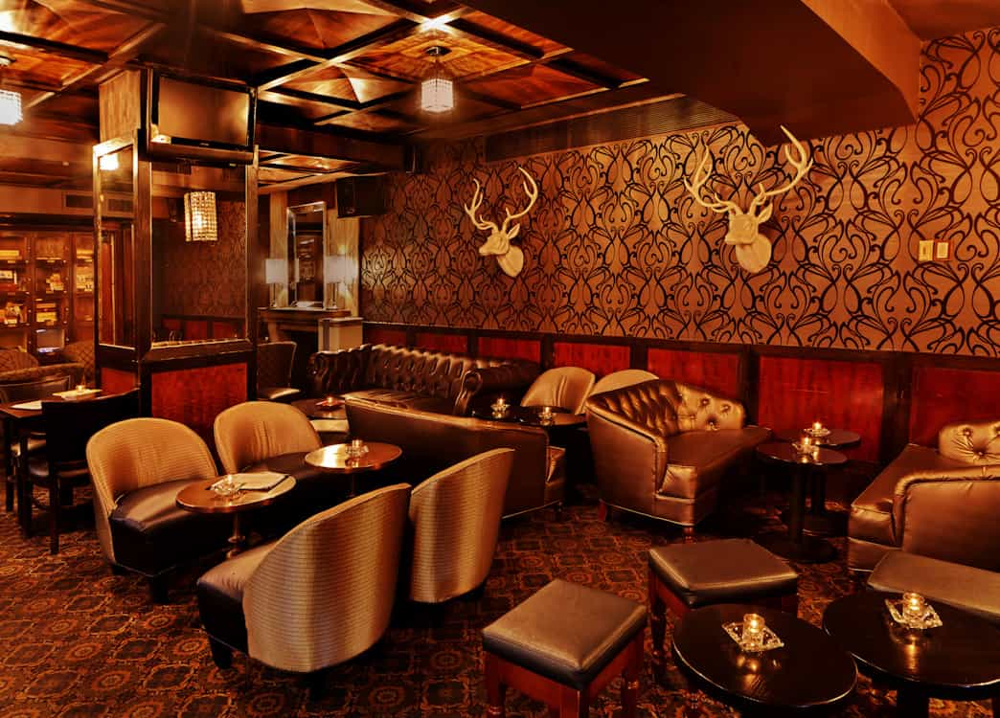

< < < Back
The Different Paths Of Western Manhood – Return Of Kings
Previously: 4 Red Pill Concepts You Need To Understand
In my previous article I discussed several concepts central to the the Red Pill awakening shared by men in the West. Continuing the Game introductory theme, I’d like to discuss common reactions men have upon their realization that women are the villains in this game…
You are not Link. You will not complete the game in under two hours without saving. You will die and you will need to restore to your last save point, over and over. You will not get your own channel on Twitch.tv and make fat stacks of cash. Statistically speaking, you are a schmoe when it comes to this game. This game is unlike anything you’ve ever played. But it can be played, and it can be enjoyed, and it can be won on your terms.
Nihilism and Solipsism; Enjoy The Decline
Now that you understand the nature of the female, what is your own nature? Just as Princess Zelda is actually the villain (or the dupe at least), might you be one as well? Many say yes and check out; Men Going Their Own Way (MGTOW) are solipsistic in a sense, despite their common feeling of camaraderie. You will be called a loser and a villain by anyone not GTOW. After taking the Red Pill, you may come to define your villainy or defeat as your retirement, rebirth, and delivery from hell. MGTOWs may even give up on women altogether, and stop working for anyone but themselves as far as they can reasonably accomplish. He might get a vasectomy at a young age in order to make his philosophy permanent. The MGTOW might reject the whole biological charade and resign himself to a quiet and peaceful enjoyment of this passing dream we call life.
Many men who take the Red Pill and come to understand the game become nihilists. Nihilism is similar to solipsism, but it is much more erratic. Nihilists might become MGTOW. They might go crazy. They might commit suicide or kill others. Nihilists may even become players, and some of the most infamous players in the entire Manosphere are nihilists of various degrees. I’ve even seen nihilists come to promote Christianized Westernism, as Anders Behring Breivik seemed to do in his manifesto. There is no telling what they will do, it is like rolling dice; it’s all dice anyways, to a real nihilist. I was once a nihilist.
Alpha Males & Self Improvement

The alpha male is a construct of our imagination; the alpha male is a very real force which must be reconciled with. Maybe you can become an alpha male, too. You will never be an alpha male. Confused?
MMA is an example of what this path means: you only get to ride high for a little while. Eventually your shin is going to snap on some schmuck’s femur and you’re going down in flames. No matter how good you are, you’re going to be bested. But so many men realize this and decide that MMA is not for them. They get fat and stupid and lazy, but winning MMA matches is a reality, and wearing that belt, and having victory is all very real and possibly attainable. Although you may not be a brawler, I am not talking about MMA. I am talking about the game.
What does it take to be a contender in this game? It takes brutal honesty. It takes rational thought. It takes courage. Training. Discipline. Risk. It takes abstract thinking too. These are the male virtues. That is why men have traditionally ruled the world, their women, and themselves. These are the virtues that women inherently lack and don’t require anyways. Men can rise above by simply being honest with themselves about the game. They must first correctly realize that there is a game, and then they must accept the rules and live by them if they want to enjoy and succeed. This is what it means to become an alpha male. You may even gain your own henchmen along the way.

Men need male space. They need a place to go where their mothers, their sisters, those bootylicious distractions are not present. They need to hear about life from other men who excel in the male virtues. There are almost no spaces left like this. Under the modern order (feminism) all male space has been demonized or eradicated, and women have been introduced as goaltenders of a sort. Hell, two men hanging out or walking somewhere together, or spending time mentoring children, are largely suspected of homosexuality these days.
Male thought that is not filtered through feminine sensibilities will result in loss of work, education, money, etc. The entire enterprise of political correctness is one gigantic feminine effort to adulterate male thought. The military, the Boy Scouts, the Elks Lodge, the Cigar Bar, the sports team, even fatherhood itself has been mocked or abolished—all have been laid low before the feminine imperative. Boys adrift have nowhere left to go to become men.
Choose Your Path
Those who choose to “man up” may find that they are at war with White Knights, nihilists, and Men Going Their Own Way. Many men consider manning up a fool’s errand, and you will be mocked for manning up. But some men want to be “saved,” redeemed, healed, empowered, and want to pursue peaceful relations with women and other men. They want to find the “higher things in life” and reject the low and ugly lies they’ve been fed. They want to tear it down and build something beautiful in its place. They may even have read about others who tore it down and built something beautiful once upon a time, ages ago. Is that man you? Hail the Return of Kings.
Read Next: Game Does Not Need Science


{kind=link}